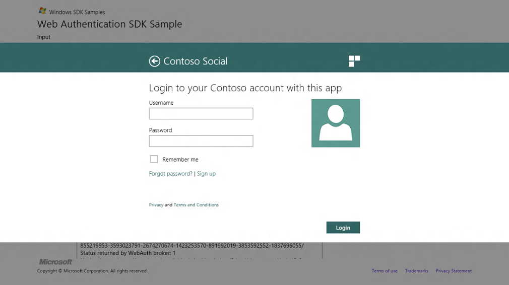

Authentication is proving who you are.
Objective: To have the web authentication broker appear as part of your app.
None
Time to complete: 15 minutes.
Launch the setup file to install a Contoso website in Internet Information Services 8 on the local machine to host the sample HTML and CSS files.
To get a feel for what the sample pages look like in the Web Authentication Broker, open the Fabrikam Social Visual Studio 11 solution file in the "Fabrikam Social" folder on the desktop.
When the Web Auth API is invoked by the underlying app to connect to the provider, "Contoso Social", the login page is shown. This page is designed to be best at a fast and fluid login experience. It also provides entry points to some other common user actions such as retrieving password details, signing up for an account, and reading statements on privacy and terms and conditions that are completed in the browser. 
Summary Tutorial for authenticating web pages
Next Authorization for web pages
Considerations for the web page development
Web Authentication Broker SDK sample app
Windows.Security.Authentication.Web
Â
Â